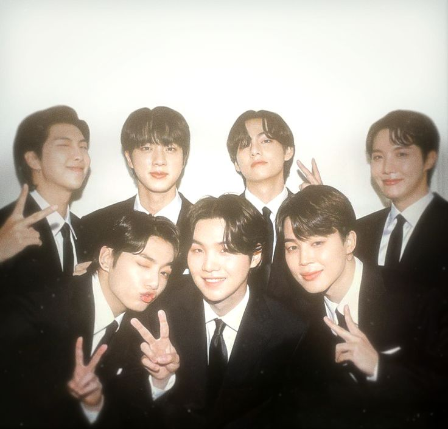

BTS (Korean: 방탄소년단; RR: Bangtan Sonyeondan; lit. 'Bulletproof Boy Scouts'), also known as the Bangtan Boys, is a South Korean boy band formed in 2010. The band consists of Jin, Suga, J-Hope, RM, Jimin, V, and Jung Kook, who co-write or co-produce much of their material. Originally a hip hop group, they expanded their musical style to incorporate a wide range of genres, while their lyrics have focused on subjects including mental health, the troubles of school-age youth and coming of age, loss, the journey towards self-love, individualism and the consequences of fame and recognition. Their discography and adjacent work has also referenced literature, philosophy and psychology, and includes an alternate universe storyline.
